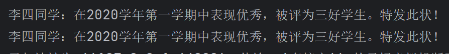
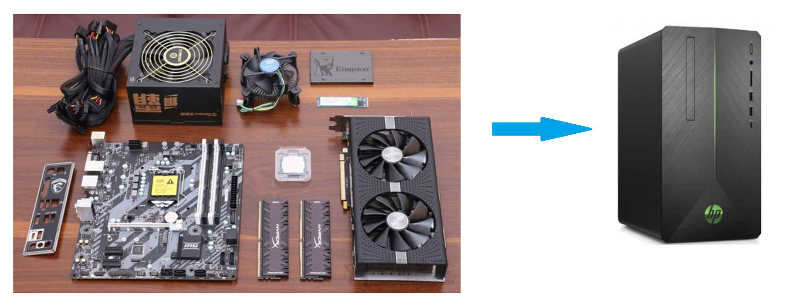

创建型模式 Ⅲ
原型模式
概述
用一个已经创建的实例作为原型，通过复制该原型对象来创建一个和原型对象相同的新对象。
结构
原型模式包含如下角色：
- 抽象原型类：规定了具体原型对象必须实现的的 clone() 方法。
- 具体原型类：实现抽象原型类的 clone() 方法，它是可被复制的对象。
- 访问类：使用具体原型类中的 clone() 方法来复制新的对象。
接口类图如下：
classDiagram
class Prototype {
<< interface >>
clone() Prototype
}
class PrototypeTest {
+ main() void
}
class Realizetype {
+ clone() Realizetype
}
Prototype <|.. Realizetype : 实现
link Realizetype "#Realizetype（具体的原型类）"
link PrototypeTest "#PrototypeTest（测试访问类）"
实现
原型模式的克隆分为浅克隆和深克隆。
浅克隆：创建一个新对象，新对象的属性和原来对象完全相同，对于非基本类型属性，仍指向原有属性所指向的对象的内存地址。
深克隆：创建一个新对象，属性中引用的其他对象也会被克隆，不再指向原有对象地址。
Java中 的 Object 类中提供了 clone() 方法来实现浅克隆。 Cloneable 接口是上面的类图中的抽象原型类，而实现了Cloneable 接口的子实现类就是具体的原型类。代码如下：
Realizetype（具体的原型类）
public class Realizetype implements Cloneable {
public Realizetype() {
System.out.println("具体的原型对象创建完成！");
}
@Override
protected Realizetype clone() throws CloneNotSupportedException {
System.out.println("具体原型复制成功！");
return (Realizetype) super.clone();
}
}PrototypeTest（测试访问类）
public class PrototypeTest {
public static void main(String[] args) throws CloneNotSupportedException {
Realizetype r1 = new Realizetype();
Realizetype r2 = r1.clone();
System.out.println("对象r1和r2是同一个对象？" + (r1 == r2));
}
}案例
用原型模式生成“三好学生”奖状
同一学校的“三好学生”奖状除了获奖人姓名不同，其他都相同，可以使用原型模式复制多个“三好学生”奖状出来，然后在修改奖状上的名字即可。
类图如下：
classDiagram
class Cloneable {
+ clone() Object
<< interface >>
}
class CitationTest {
+ main() void
}
class Citation {
- name : String
+ setName(String name) void
+ getName() String
+ clone() Citation
}
Cloneable <|.. Citation : 实现
Code:
//奖状类
public class Citation implements Cloneable{
//三好学生上的姓名
private String name;
//省略 get set..
@Override
public Citation clone() throws CloneNotSupportedException {
return (Citation) super.clone();
}
public void show() {
System.out.println(name + "同学：在2020学年第一学期中表现优秀，被评为三好学生。特发此状！");
}
}
//测试访问类
public class CitationTest {
public static void main(String[] args) throws CloneNotSupportedException {
Citation citation = new Citation();
Citation clone = citation.clone();
clone.setName("张三");
citation.setName("李四");
clone.show();
citation.show();
}
}使用场景
- 对象的创建非常复杂，可以使用原型模式快捷的创建对象。
- 性能和安全要求比较高。
拓展(深克隆)
将上面的“三好学生”奖状的案例中 Citation 类的 name 属性修改为 Student 类型的属性。代码如下：
//奖状类
public class Citation implements Cloneable {
private Student stu;
//省略 get set..
@Override
public Citation clone() throws CloneNotSupportedException {
return (Citation) super.clone();
}
public void show() {
System.out.println(stu.getName() + "同学：在2020学年第一学期中表现优秀，被评为三好学生。特发此状！");
}
}
//学生类
public class Student {
private String name;
//省略 get set toString..
}
//测试类
public class CitationTest {
public static void main(String[] args) throws CloneNotSupportedException {
Citation citation = new Citation();
Student stu = new Student();
stu.setName("张三");
citation.setStu(stu);
Citation clone = citation.clone();
clone.getStu().setName("李四");
citation.show();
clone.show();
}
}
说明：
stu 对象和 clone 对象是同一个对象，就会产生将 clone对象中 name 属性值改为“李四”，两个 Citation（奖状）对象中显示的都是李四。这就是浅克隆的效果，对具体原型类（Citation）中的引用类型的属性进行引用的复制。这种情况需要使用深克隆，而进行深克隆需要使用对象流。代码如下：
public class CitationTest {
public static void main(String[] args) throws Exception {
Citation citation = new Citation();
Student stu = new Student();
stu.setName("张三");
citation.setStu(stu);
//输出至文件
ObjectOutputStream oos = new ObjectOutputStream(new FileOutputStream("./a.txt"));
oos.writeObject(citation);
oos.close();
//读取输入流
ObjectInputStream ois = new ObjectInputStream(new FileInputStream("./a.txt"));
//读取对象
Citation citation1 = (Citation) ois.readObject();
ois.close();
//重新赋值
citation1.getStu().setName("李四");
citation.show();
citation1.show();
}
}注意：Citation 类和 Student 类必须实现 Serializable 接口，否则会抛 NotSerializableException 异常。
建造者模式
概述
将一个复杂对象的构建与表示分离，使得同样的构建过程可以创建不同的表示。

- 分离了部件的构造(由 Builder 来负责)和装配(由 Director 负责)。 从而可以构造出复杂的对象。这个模式适用于：某个对象的构建过程复杂的情况。
- 由于实现了构建和装配的解耦。不同的构建器，相同的装配，也可以做出不同的对象；相同的构建器，不同的装配顺序也可以做出不同的对象。也就是实现了构建算法、装配算法的解耦，实现了更好的复用。
- 建造者模式可以将部件和其组装过程分开，一步一步创建一个复杂的对象。用户只需要指定复杂对象的类型就可以得到该对象，而无须知道其内部的具体构造细节。
结构
建造者（Builder）模式包含如下角色：
-
抽象建造者类（Builder）：这个接口规定要实现复杂对象的那些部分的创建，并不涉及具体的部件对象的创建。
-
具体建造者类（ConcreteBuilder）：实现 Builder 接口，完成复杂产品的各个部件的具体创建方法。在构造过程完成后，提供产品的实例。
-
产品类（Product）：要创建的复杂对象。
-
指挥者类（Director）：调用具体建造者来创建复杂对象的各个部分，在指导者中不涉及具体产品的信息，只负责保证对象各部分完整创建或按某种顺序创建。
类图如下：
classDiagram
class Director {
- builder : Builder
+ construct() Product
}
class Builder {
+ buildPartA() void
+ buildPartB() void
}
class ConcreteBuilder {
+ buildPartA() void
+ buildPartB() void
+ getResult() Product
}
class Product
Builder --o Director : 组合
Builder <|-- ConcreteBuilder : 继承
ConcreteBuilder ..> Product : 依赖
note for Director "指挥者, 是构建一个使用Builder接口的对象"
note for Builder "Builder是为创建一个Product对享的各个部件指定的接口"
note for Product "具体的产品"
实现
创建共享单车
生产自行车是一个复杂的过程，它包含了车架，车座等组件的生产。而车架又有碳纤维，铝合金等材质的，车座有橡胶，真皮等材质。对于自行车的生产就可以使用建造者模式。
这里 Bike 是产品，包含车架，车座等组件；Builder 是抽象建造者， MobikeBuilder 和 OfoBuilder 是具体的建造者；Director 是指挥者。类图如下：
classDiagram
class Client {
+ main() void
+ showBike() void
}
class Bike {
- frame : String
- seat : String
+ setFrame(String seat) void
+ getFrame() String
+ getSeat() String
}
class Builder {
# mBike : Bike
+ buildFrame() void
+ buildSeat() void
+ createBike() Bike
}
class Director {
- mBuilder : Builder
+ Director(Builder builder)
+ construct() Bike
}
class MobikeBuilder {
+ buildFrame() void
buildSeat() void
createBike() Bike
}
class OfoBuilder {
+ buildFrame() void
+ buildSeat() void
+ createBike() Bike
}
Client ..> Bike
Client ..> Builder
Client ..> Director
Builder o-- Bike : 聚合
Director o-- Builder : 聚合
Builder <|-- MobikeBuilder
Builder <|-- OfoBuilder
link Bike "#自行车-Code"
link Builder "#抽象构建者-Code"
link MobikeBuilder "#mobile构建者-Code"
link OfoBuilder "#ofo构建者-Code"
link Director "#指挥者-Code"
link Client "#构建者测试类-Code"
自行车-Code
public class Bike {
private String frame;//车架
private String seat;//车座
//省略 get set..
}抽象构建者-Code
public abstract class Builder {
protected Bike bike = new Bike();
//构建车架
public abstract void buildFrame();
//构建车座
public abstract void buildSeat();
//构建自行车方法
public abstract Bike createBike();
}mobile构建者-Code
public class MobileBuilder extends Builder{
@Override
public void buildFrame() {
bike.setFrame("碳钎维车架");
}
@Override
public void buildSeat() {
bike.setSeat("真皮车座");
}
@Override
public Bike createBike() {
return bike;
}
}ofo构建者-Code
public class OfoBuilder extends Builder{
@Override
public void buildFrame() {
bike.setFrame("铝合金");
}
@Override
public void buildSeat() {
bike.setSeat("橡胶车座");
}
@Override
public Bike createBike() {
return bike;
}
}指挥者-Code
public class Director {
//声明builder类型的变量
private Builder builder;
public Director(Builder builder) {
this.builder = builder;
}
//组装自行车的功能
public Bike construct() {
builder.buildFrame();
builder.buildSeat();
return builder.createBike();
}
}构建者测试类-Code
public class Test {
public static void main(String[] args) {
//创建指挥者对象
Director director = new Director(new MobileBuilder());
//让指挥者指挥组装自行车
Bike bike = director.construct();
System.out.println(bike.getFrame());
System.out.println(bike.getSeat());
}
}注意：
上面示例是 Builder 模式的常规用法，指挥者类 Director 在建造者模式中具有很重要的作用，它用于指导具体构建者如何构建产品，控制调用先后次序，并向调用者返回完整的产品类，但是有些情况下需要简化系统结构，可以把指挥者类和抽象建造者进行结合
// 抽象 builder 类
public abstract class Builder {
protected Bike mBike = new Bike();
public abstract void buildFrame();
public abstract void buildSeat();
public abstract Bike createBike();
public Bike construct() {
this.buildFrame();
this.BuildSeat();
return this.createBike();
}
}说明：
这样做确实简化了系统结构，但同时也加重了抽象建造者类的职责，也不是太符合单一职责原则，如果 construct() 过于复杂，建议还是封装到 Director 中。
优缺点
优点：
- 建造者模式的封装性很好。使用建造者模式可以有效的封装变化，在使用建造者模式的场景中，一般产品类和建造者类是比较稳定的，因此，将主要的业务逻辑封装在指挥者类中对整体而言可以取得比较好的稳定性。
- 在建造者模式中，客户端不必知道产品内部组成的细节，将产品本身与产品的创建过程解耦，使得相同的创建过程可以创建不同的产品对象。
- 可以更加精细地控制产品的创建过程 。将复杂产品的创建步骤分解在不同的方法中，使得创建过程更加清晰，也更方便使用程序来控制创建过程。
- 建造者模式很容易进行扩展。如果有新的需求，通过实现一个新的建造者类就可以完成，基本上不用修改之前已经测试通过的代码，因此也就不会对原有功能引入风险。符合开闭原则。
缺点：
造者模式所创建的产品一般具有较多的共同点，其组成部分相似，如果产品之间的差异性很大，则不适合使用建造者模式，因此其使用范围受到一定的限制。
使用场景
建造者（Builder）模式创建的是复杂对象，其产品的各个部分经常面临着剧烈的变化，但将它们组合在一起的算法却相对稳定，所以它通常在以下场合使用。
- 创建的对象较复杂，由多个部件构成，各部件面临着复杂的变化，但构件间的建造顺序是稳定的。
- 创建复杂对象的算法独立于该对象的组成部分以及它们的装配方式，即产品的构建过程和最终的表示是独立的。
模式拓展
建造者模式除了上面的用途外，在开发中还有一个常用的使用方式，就是当一个类构造器需要传入很多参数时，如果创建这个类的实例，代码可读性会非常差，而且很容易引入错误，此时就可以利用建造者模式进行重构。
重构前代码如下：
public class Phone {
private String cpu;
private String screen;
private String memory;
private String mainboard;
public Phone(String cpu, String screen, String memory, String mainboard) {
this.cpu = cpu;
this.screen = screen;
this.memory = memory;
this.mainboard = mainboard;
}
// 省略 get set toString..
}
public class Client {
public static void main(String[] args) {
//构建Phone对象
Phone phone = new Phone("intel","三星屏幕","金士顿","华硕");
System.out.println(phone);
}
}上面在客户端代码中构建 Phone 对象，传递了四个参数，如果参数更多呢？代码的可读性及使用的成本就是比较高。
使用构建者模式重构
public class Phone {
private String cpu;
private String screen;
private String memory;
private String mainboard;
//私有构造方法
private Phone(Builder builder) {
this.cpu = builder.cpu;
this.screen = builder.screen;
this.memory = builder.memory;
this.mainboard = builder.mainboard;
}
//内部构建者
public static final class Builder {
private String cpu;
private String screen;
private String memory;
private String mainboard;
public Builder cpu(String cpu) {
this.cpu = cpu;
return this;
}
public Builder screen(String screen){
this.screen = screen;
return this;
}
public Builder memory(String memory){
this.memory = memory;
return this;
}
public Builder mainboard(String mainboard){
this.mainboard = mainboard;
return this;
}
//使用构建者来构建对象
public Phone build() {
return new Phone(this);
}
}
//省略 toString
}
测试类
public class Test {
public static void main(String[] args) {
Phone phone = new Phone.Builder()
.cpu("intel")
.screen("三星")
.memory("金士顿")
.mainboard("华硕主板")
.build();
System.out.println(phone);
}
}重构后的代码在使用起来更方便，某种程度上也可以提高开发效率。从软件设计上，对程序员的要求比较高。
建造者模式对比
工厂方法 VS 建造者
工厂方法模式注重的是整体对象的创建方式；而建造者模式注重的是部件构建的过程，意在通过一步一步地精确构造创建出一个复杂的对象。
我们举个简单例子来说明两者的差异，如要制造一个超人，如果使用工厂方法模式，直接产生出来的就是一个力大无穷、能够飞翔、内裤外穿的超人；而如果使用建造者模式，则需要组装手、头、脚、躯干等部分，然后再把内裤外穿，于是一个超人就诞生了。
抽象工厂 VS 建造者
抽象工厂模式实现对产品家族的创建，一个产品家族是这样的一系列产品：具有不同分类维度的产品组合，采用抽象工厂模式则是不需要关心构建过程，只关心什么产品由什么工厂生产即可。
建造者模式则是要求按照指定的蓝图建造产品，它的主要目的是通过组装零配件而产生一个新产品。
如果将抽象工厂模式看成汽车配件生产工厂，生产一个产品族的产品，那么建造者模式就是一个汽车组装工厂，通过对部件的组装可以返回一辆完整的汽车。